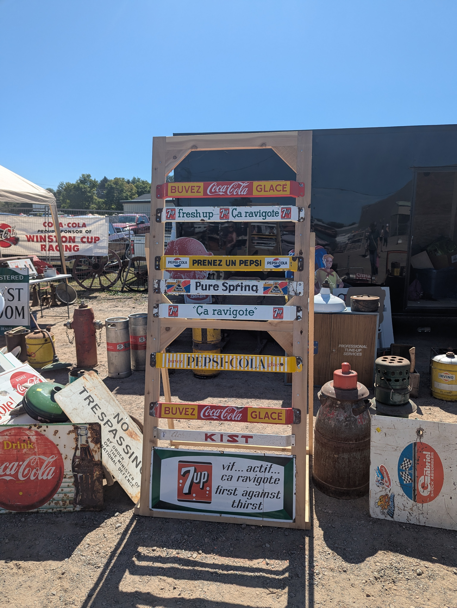
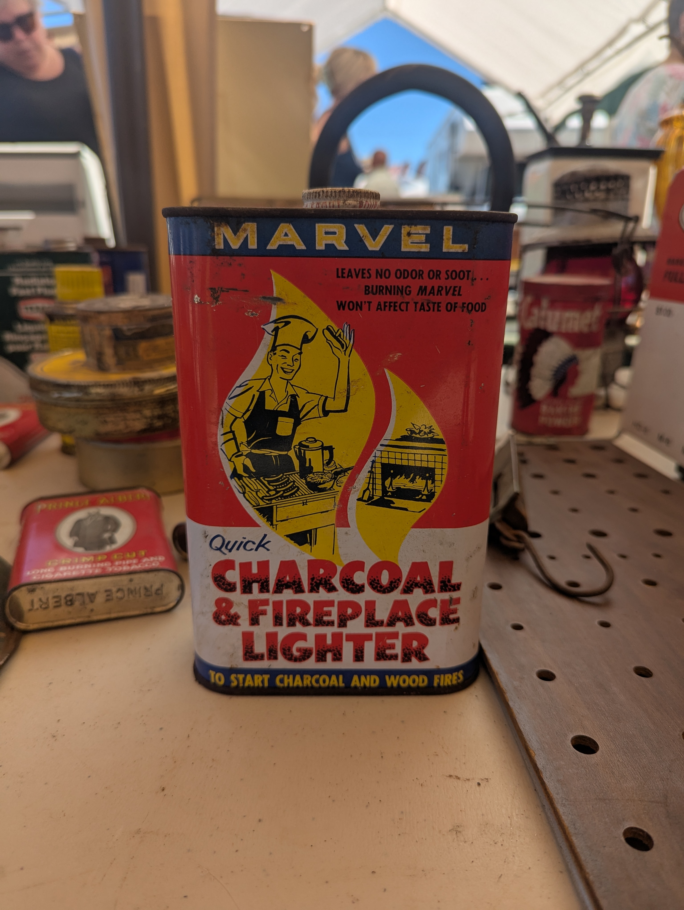
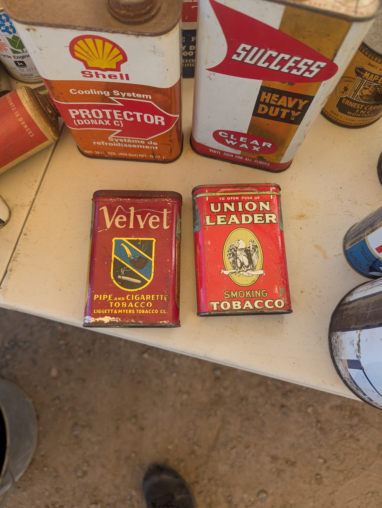
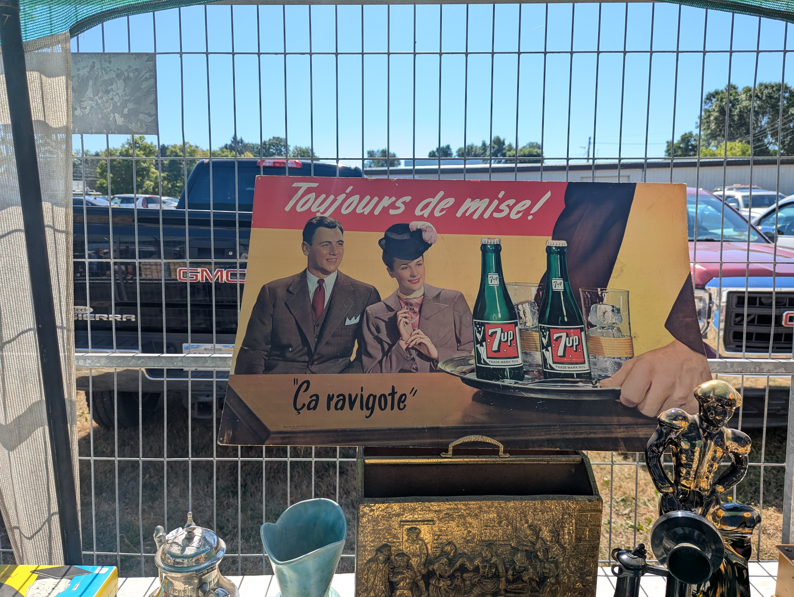
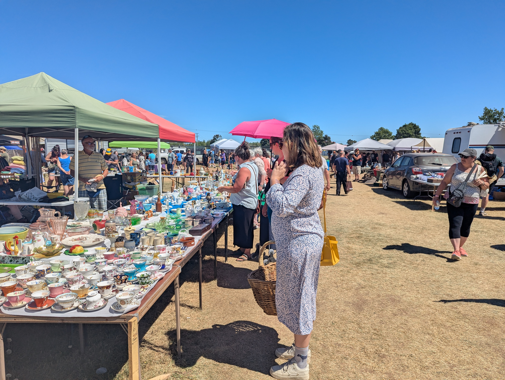
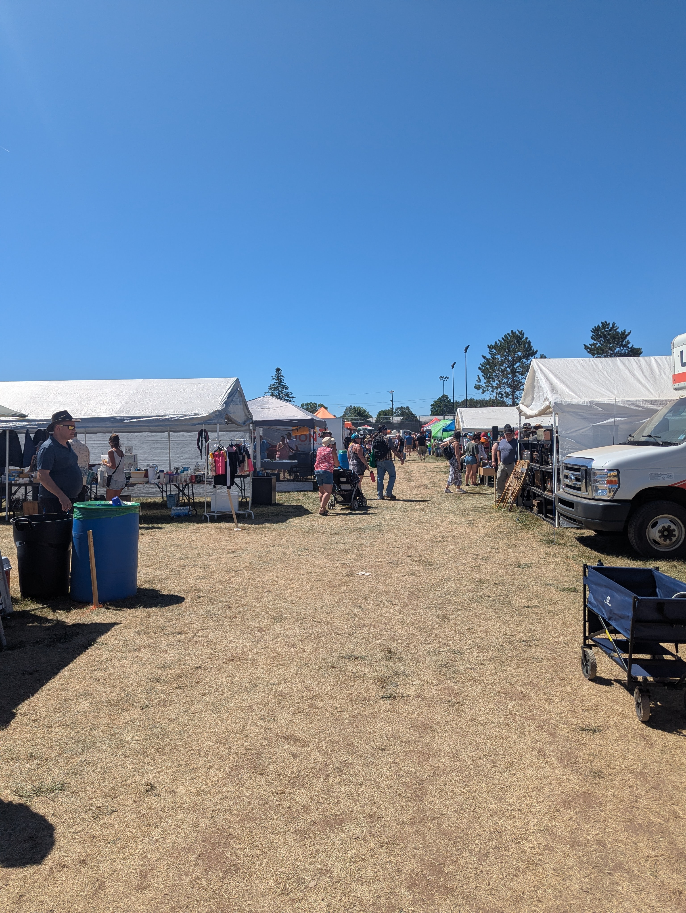
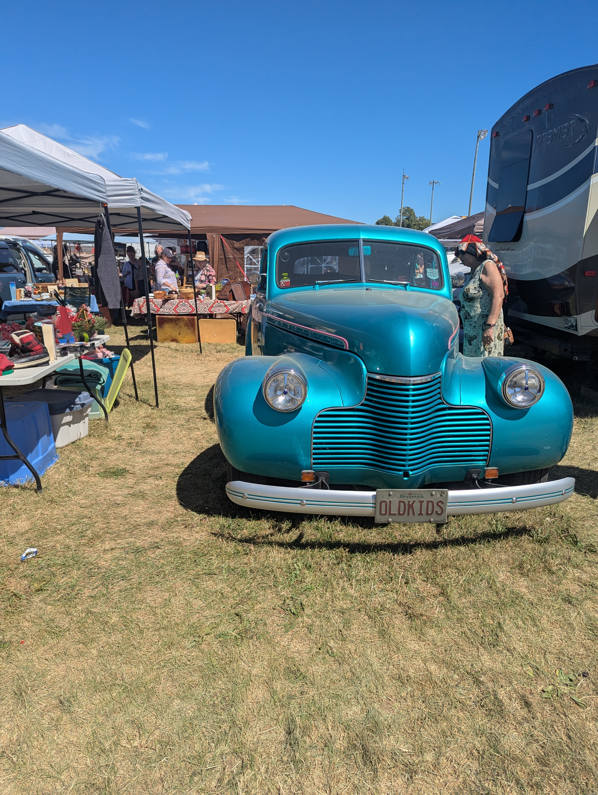
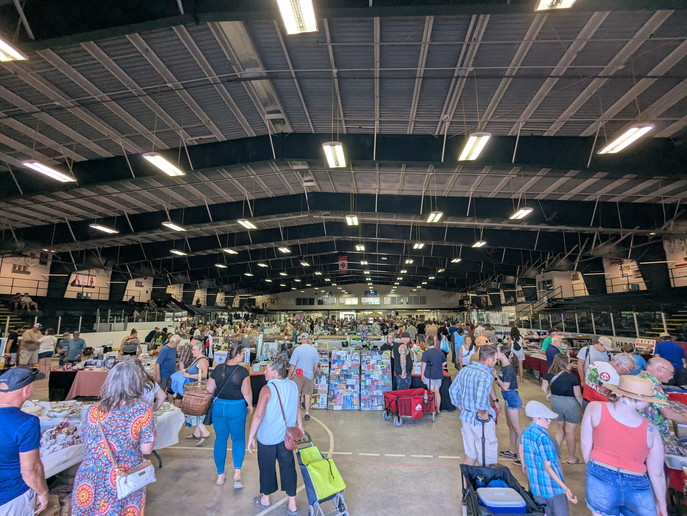

Chiner à l’americaine
On a eu la bonne idée de se rendre à notre premier marché au puce au Canada. Sur conseils de nos hôtes bien sûr. Pour ça, on va se rendre à Sussex. On parle quand même ici du plus grand de la province (Saint-Ouen rigole) et il a lieu une fois par an. Donc on respecte. C’est un peu le main event de l’année pour les collectionneurs locaux. Trop bien pour assister à un évènement authentique made in Canada.
Bim bam boum, ferry, on salue Roger qui nous fait la traversée, route qui dure 3 plombs, on connait la chanson maintenant. Le centre-ville de Sussex est plutôt mignon, une avenue avec pleins de petites boutiques. Il y a même quelques tags sur certains murs qui donnent du charme à la ville.
Les légendes de la ville Des représentations de la vie d’avant

Nous ne trainons pas non plus pas car on a des affaires en or à conclure. Puis nous voila devant la bête. Ca ressemble à un marché façon milieu arride, voire même un mood un peu post-apocalyptique dans le délire Fallout (d’ailleurs j’ai croisé un gars avec un tshirt vault-boy au bout de 5 minutes). Des grands étendues de terrain vague, beaucoup de férailles et d’objets vintage notamment des publicités, des looks délirants, il manquait juste le nuka cola et on y était. Franchement on adore. Y’avait énormément de choses différentes, du mobilier, des jeux vintages, des cartes à collectionner, bref tout ce qu’on peut trouver dans un vide-grenier mais façon amérique du nord. Mais beaucoup de charme disons-le. On a envie de tout prendre. On valide fort le slogan “7up ça ravigote”.








Puis ce qui était particulièrement intéressant c’était d’observer sous le prisme social tout un pan de la société canadienne se rendre à cet évènement. Ca nous permet en tant qu’observateur d’aller à la rencontre de styles et lifestyle très différents avec la France : tenues vestimentaires (parfois très extravagantes), des coupes de cheveux, des tatouages, des centres d’intérêts variés, le body-language qui est même différent. Par exemple on croisera de nombreux amateurs de country/cowboy (ceinture en cuire, moustache, chapeau), le total look à la texas ranger. Mais aussi le cliché vestimentaire de l’homme nord américain : tshirt/chemise complètement oversize, enorme logo de la marque en plein milieu, un short qui parait tout petit en contraste et bien sûr la paire de basket de sport confortable mais pas esthétique. Des gens de tous les âges, de tous les poids et morphologies. Beaucoup de cultures différentes qui cohabitent ensemble, c’est quand même beau.
Au final côté transactions et négociations serrées, peu d’achats malgré les tentations. Etant donné qu’on a pas encore notre chez-nous on a pas envie de s’encombrer trop en avance. On décide quand même pour la forme de prendre 2-3 bricoles histoire de dire qu’on y était. Un paquet de cartes à collectionner de NBA datant d’une série de 1991 et un petit poulpe en impression 3D pour ma part. Une photographie d’une baleine pour Salomé.
Résurection à Parlee Beach
Ce jour était assommant de par la chaleur étouffante et le manque d’ombre sur la place de marché. On s’enfile un repas en express et on décide d’aller à 1h de là-bas pour se rendre à Parlee Beach. C’est réputé pour être la plage la plus douce de la province en terme de température. Avec Salomé, on a la bonne idée de se prendre une glace dès l’arrivée pour se rafraichir et on commande des “crèmes molles”. C’est typiquement la glace italienne qu’on a chez nous. Sauf que le truc fond en 10 secondes littéralement, vraiment une bombe à retardement. Je passe un moment horrible, aucun plaisir. Obliger de la manger en 1m20 top chrono pour abréger la liquéfaction sur la main. Une insulte au maitre glacier que je suis.

Un piège maléfique
Heureusement la plage, elle, répond à toutes les attentes : sable fin, grandes étendues de sable, beaucoup d’espace, eau hyper fraîche à la bonne température, pas énormement d’enfants. On passe un moment délicieux et on se rafraichit complètement pendant quelques heures sans regarder l’heure.
Crochet rapide à Moncton et en proie aux oiseaux
La soirée se déroulera à Moncton. Une des 3 plus grandes villes du New-Brunswick. Ca commencera de manière un peu enchantée mais faut le dire vite. Un groupe d’oiseaux, impressionnant par leur nombre, se trouve juste à côté de notre place de parking. On est émerveillés par le spectacle aérien qui se joue devant nos yeux. C’est qu’ils sont synchros les pépéres. Plusieurs passages au dessus de nos têtes, on se dit qu’on est chanceux d’assister à cela en live. C’était avant de savoir qu’ils commenceront à défequer sur tout ce qui bouge autour de nous. Des impacts de fientes se font entendre de partout comme s’ils étaient des mitrailleurs dans un hélico avec chargeurs grande capacité. Les voitures prennent tarifs et nous on court pour se réfugier sous un arbre à temps mais ils nous poursuivent. On passe de justesse entre les gouttes (les excréments) mais un homme innocent devant nous n’a pas eu cette chance. RIP your shirt buddy.
‘Ils chient ?’ demanda l’innocent
Chaudement accueillis par nos amis, on décide d’aller se réconforter dans un restaurant de ramen. Premier japonais au Canada. C’est délicieux, poulet kaarage dans le gausier et on se détend tout de suite. Salomé se prend sa petite bière Canadienne et on savoure cette fin de journée comme il se doit avec le sourire.
Une binouze fraiche chacal, Moosehead baby Subarashi desu ne ?

Voila qui aura conclu cette magnifique journée. On poste très prochainement notre découverte du marché de Gagetown. Merci d’avoir pris le temps de lire ou d’avoir essayé en tout cas. A très bientôt 👋🏻